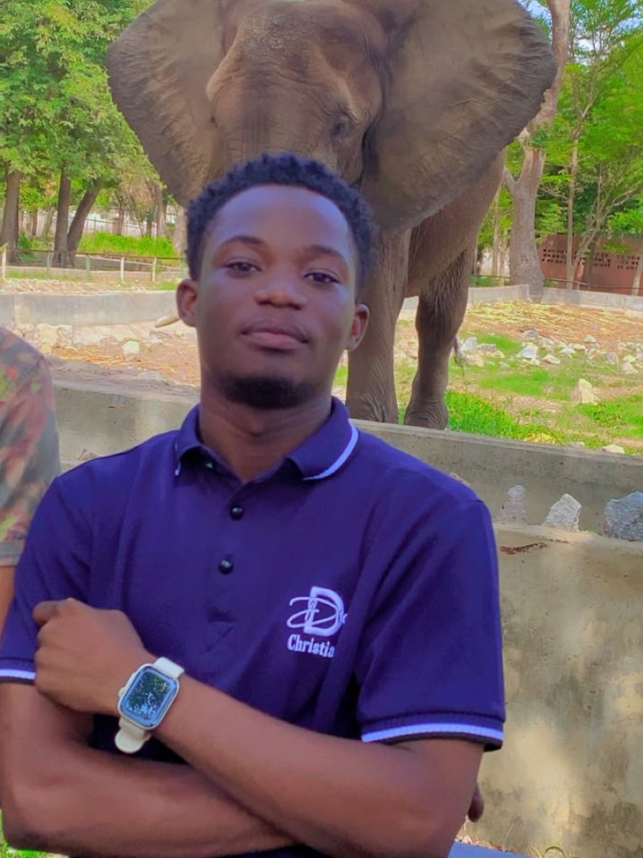

Hi, I'm
Frontend Developer, I build responsive and modern websites.
View My Projects Hire MeI'm Abubakar Jesse, a final-year Microbiology student and passionate Frontend Developer. I enjoy building responsive websites, learning new technologies every day, and I'm working toward freelance and remote opportunities.
A responsive diagnostic laboratory website designed to showcase medical services, laboratory information, and contact details with a clean and professional user interface.
Live Demo Source CodeA modern and responsive restaurant website featuring a stylish hero section, menu, gallery, reservation form, and contact information, built with HTML and CSS.
Live Demo Source CodeI'm always open to discussing new projects, freelance opportunities, internships, or remote work. Feel free to reach out if you'd like to work together or simply say hello!
Email Me Chat with me on WhatsApp GitHub